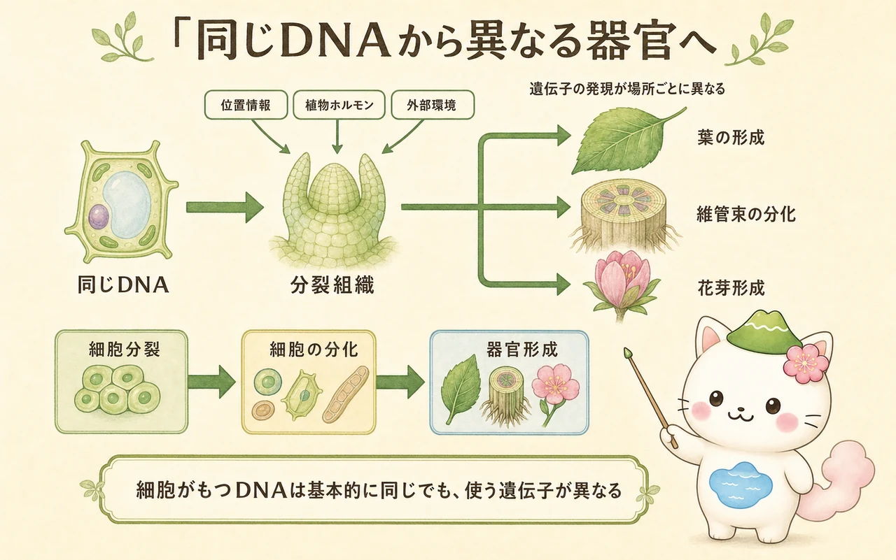

成長を生む分裂組織
植物の成長は、細胞が大きくなることだけではありません。まず細胞分裂で細胞数を増やし、その後、細胞の伸長と分化が続きます。分裂を続ける未分化な細胞の集まりを分裂組織といいます。根と茎の先端にある茎頂分裂組織・根端分裂組織は、根や茎を長くする一次成長を担います。
木本植物などでは、茎や根の内部に形成層という側方分裂組織があります。形成層が分裂して内側に木部、外側に師部を加えることで、幹や根は太くなります。これが二次成長です。年輪は、季節による成長量や木部の細胞の違いが重なって見えるものです。イネ科のように節の近くの介在分裂組織が働き、刈られた後に葉や茎を伸ばす植物もあります。

3つの組織系と維管束
分化した細胞は、役割の近い細胞どうしで組織をつくります。植物体は大きく、表皮系、基本組織系、維管束系の三つの組織系として捉えられます。表皮系は外側を覆い、クチクラや気孔とともに、水分の損失と気体交換を調節します。基本組織系には、光合成を行う葉肉、物質を蓄える柔組織、体を支える厚角組織や厚壁組織などが含まれます。
維管束系は長距離輸送の道です。木部は主に根から吸収した水と無機イオンを運び、師部は光合成産物を、つくられた場所（ソース）から消費・貯蔵する場所（シンク）へ運びます。形成層をもつ茎では、一般に外側から師部・形成層・木部の順に並びます。ただし、単子葉類と双子葉類、根と茎では維管束の配置が異なります。

「植物は根から上へ水を運ぶ」だけでなく、葉でつくった糖を師部で必要な場所へ運んでいるよ。伸びる芽、育つ種子、地下の根も、全部がソースとシンクの関係でつながっているんだ。
同じDNAから異なる器官へ
根の細胞、葉の細胞、花の細胞は、通常は同じDNAをもちます。それでも形と働きが違うのは、どの遺伝子を、いつ、どこで働かせるかが異なるためです。これを遺伝子の発現の違いといいます。細胞は周囲の細胞から受ける位置情報、植物ホルモンの濃度、光・温度などの環境情報を統合し、分裂・伸長・分化の方向を決めます。
たとえば茎頂分裂組織では、外側へできた小さな突起が葉原基となり葉へ育ちます。発生段階の遺伝子ネットワークとホルモンの分布は、葉の表裏、維管束の位置、花芽がいつ花へ切り替わるかに関わります。植物の形は、設計図を一度に読み上げた結果ではなく、成長中の細胞どうしのやりとりが繰り返されて生まれます。

再生と全能性
植物では、傷ついた部分の近くにある細胞が分裂を始め、新しい組織をつくることがあります。また、適切な栄養と植物ホルモンの条件を整えると、植物の細胞や組織から未分化な細胞塊（カルス）をつくり、そこから根や芽を再生させられる場合があります。これを利用したのが組織培養です。
こうした性質は、植物細胞がもつ全能性、すなわち条件が整えば一個の細胞から個体をつくり得る性質として説明されます。ただし、すべての細胞・すべての種で同じように簡単に再生できるわけではありません。再生のしやすさは、細胞の状態、植物種、培地、ホルモンの組み合わせに左右されます。
この冊子の要点
- 分裂組織が細胞を供給し、一次成長は長さ、形成層による二次成長は太さを増します。
- 表皮系・基本組織系・維管束系が、保護・光合成や支持・長距離輸送を分担します。
- 同じDNAをもつ細胞でも、遺伝子発現、位置情報、ホルモン、環境への応答が違うため、根・葉・花などへ分化します。
- 植物には再生能力があり、組織培養はその性質を利用した技術です。